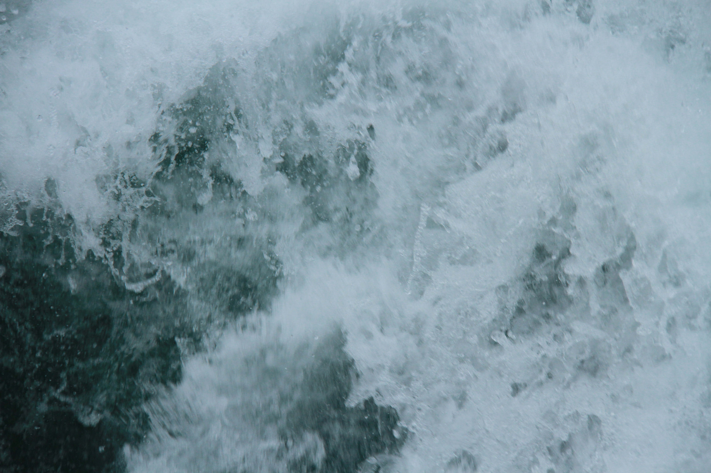

Einleitung
Was ist Experimentelles Erzählen für mich?
- Erzeugt unterschiedliche Reaktionen
- Grosser Interpretationsspielraum
- Improvisation
Wo begegnet man ihr?
- Comedy
- Hazel Brugger (Poetry-Slam, sehr monoton, satyrisch)
- Duo ohne Rolf (stumm, mit Typografie und Mimik)
- Musik
- Rap
- Reime
Projekt
Aufgabenstellung
Eine eigene experimentelle Geschichte generieren. Rohmaterial für die Erzählung wird auf einem Schifffahrtsausflug gesammelt. Später soll daraus die komplette Geschichte entstehen. Es darf sich durchaus während des Herstellungsprozesses ändern, da es ein experimentelles Projekt ist. Als Resultat kann ein Film, Spiel, eine Installation oder ähnliches entstehen.
Ideenbörse
Die gemeinsam besuchte Schifffahrt dient dazu, Geschichten zu entdecken und zu sammeln. Jeder macht sich dazu Gedanken, wie er das Material sammeln will. Jedem seiner Interessen entsprechend, bilden wir die Projektgruppen. Zu viert wollten wir mit allen Erzählebenen arbeiten: Bild, Video, Audio, Gestik und Text zur Unterstützung der Erzählung. Wir entscheiden uns, dass ich mit dem Audiogerät aufnehme, Nadia und Tiö fotografieren und Natascha filmt. Die Gestik und den Text wollen wir im Nachhinein hinzufügen, abhängig davon, wie sich unser gesammeltes Material entwickelt. Als Hauptmerkmal definieren wir die Gegensätze laut/leise und ruhig/nervös.
Unsere Idee
Interpretation und Wahrnehmung: Das Empfinden ist eine ganz persönliche Sache. Was passiert, wenn wir bewusst und forciert für Verwirrung Sorgen? Wie fällt die Interpretation aus, wenn wir gegensätzliche Elemente in eine Aussage vermischen?
Wie wirken Bild und Audio aufeinander. Das Eine funktioniert auch ohne das Andere. Was macht es aber für einen Unterschied?
Wie wirken statische Bilder, bewegte Bilder und Töne auf verschiedene Weise kombiniert? Daraus entsteht vielleicht die Diskussion: «Wieso ist das so?».
Eine banale Schiffs-Reise? Vielleicht, oder vielleicht das Gegenteil. Auf dem Schiff findet so viel verschiedenes gleichzeitig statt. Etliche Wahrnehmungen treffen aufeinander. Hier sind gegensätzliche Geschichten, die zwar in der selben Zeit passieren, aber meist getrennt und parallel nebeneinander laufen, zu finden. Was, wenn wir damit spielen und sie nicht mehr parallel und getrennt laufen lassen, sondern willkürlich mischen? Bilder, Töne und Gestik – gegensätzliche oder gleiche Aussagen prallen somit aufeinander. Entstehen so angenehme oder verwirrenden Mischungen?
Technische Hilfsmittel
Videokamera, Tonaufnahmegerät, Smartphone, Fotokamera, Mac, iMovie (für Filmmontage)
Vorgehen, Prozess, einfache Zeitplanung
- Material sammeln bei der Schifffahrt: Audio, Video, Foto
- Materialauswahl: Aufteilung in zwei Kategorien, ruhig und nervös
- Vier Themen in der Gruppe aufteilen und ausarbeiten: 1. Mensch, 2. Wasser+Objekte, 3. Stimmung, 4. Spannung
- Jedes Mitglied der Gruppe entwickelt einen Filmabschnitt bestehend aus Audio, Film und Fotos. So entstehen 4 Kurzfilme.
- Im Plenum: Story mit allen 4 Filmen zusammenstellen, Wording wählen um die Botschaft zu unterstützen
- Aufnahmen des Wordings in Gebärdensprache. Der Satz wird am Ende noch als Text eingeblendet.
- Video Montage und Schnitt pflegen
- Intro mit verschiedenen Impressionen erstellen
Erstellung
Material erzeugen
Auf der Schifffahrt suchen wir nach Bildern, Videos und Geräuschen, die nach Gegensätzen – laut/leise, ruhig/nervös – eingeteilt werden können. In einem späteren Zeitpunkt werden wir einen Satz in Gebärdensprache aufnehmen und in vier Abschnitte teilen. Mit dem zusammengetragenen Material kann die Story entwickelt werden: wie werden Bilder (Foto/Video), Audio und Gebärdensprache gemischt, um das gewünschte Resultat zu erzeugen?
Hier einige Beispiele unseres gesammelten Materials:
Bild ruhig

Bild nervös

Audio ruhig
Audio nervös
Video ruhig
Video nervös
Als Ergebnis soll ein Film entstehen. Jeder Abschnitt wird von einem Mitglied der Gruppe realisiert und vertont. Die Montage wird im Plenum zusammengefügt. Das Resultat wird nicht eine in sich fertige Geschichte sein, mehr eine Dokumentation über das Interpretieren und Wahrnehmen verschiedener Impressionen. Wir wollen «etwas» in den Raum werfen: Fragen, oder sich fragende Leute da stehen lassen. Die Lösung liegt beim Betrachter.
Nach dem Sammeln des Materials machen wir uns ans Sortieren der vielen Audio-, Foto- und Filmdateien. Im Anschluss beginnen wir für unseren Film Unterthemen zu bestimmen, damit jeder einen Teil bearbeiten kann.
Die 4 Abschnitte und ihre Leiter
- Wasser/Umgebung: Tiö
- Leute/Stimmung: Nicole
- Schiff/Objekte: Natascha
- Gefahr/schnell: Nadia
Ausführung
Jeder ist für seinen eigenen Kurzfilm verantwortlich. Die Gegensätze (leise/ruhig und laut/nervös) sollen darin natürlich sichtbar werden. Im iMovie entstehen diese Teile mit einer Mischung aus allen Erzählebenen. Durch Sequenzen mit oder ohne Ton und Sequenzen ohne Bild dafür mit Audio, soll der Interpretation des Zuschauers grossen Spielraum lassen.
Feintuning
Nun werden alle Übergänge genau definiert, die Zeiten angepasst und Farbkorrekturen vorgenommen. Als Intro beschliessen wir verschiedene Impressionen der Schifffahrt in Form von Fotos ganz schnell nacheinander laufen zu lassen. Pausen zwischen den einzelnen Szenen sind notwendig damit der Betrachter sich sammeln kann und so auf die Fortsetzung vorbereitet ist.
Endprodukt
Unser Kurzfilm ist fertig. Mit 4 Minuten 30 Sekunden entspricht er der gewünschten Länge. Wir sind gespannt auf die Reaktionen der Mitschüler. Werden sie die Geschichte gleich interpretieren wie wir? Verstehen sie überhaupt, was der Film aufzeigen soll oder ist es ein totales Chaos?
Präsentation
Fragen vor der Präsentation:
Genügen die gewählten Mittel, um das Experiment verständlich zu machen?
Wie kann man Bilder wahrnehmen?
Was empfinden verschiedene Betrachter?
Wieso?
Reaktionen der Mitschüler
Wie erwartet sind die Meisten total verwirrt. Einige hat es sogar ein wenig überfordert. Nur Wenige verstanden unsere Absicht, mit den verschiedenen Erzählebenen zu spielen und Chaos zu generieren. Basil war sehr überzeugt vom Film und fand es spannend, wie wir mit bewegten Bildern ohne Ton oder Audio ohne Bild gespielt haben.
Rückblick
Ich fand unser Projekt sehr spannend. Vorallem, da es sich durchs Arbeiten Schritt für Schritt entwickelte. Besonders am Anfang des Projektes war es eine grosse Herausforderung das gemeinsame Verständnis für den Inhalt des Kurzfilms zu bilden. So haben wir gezielt nie genaue Schritte festgelegt, um fortlaufend Änderungen und Anpassungen vornehmen zu können. Das Zusammenspiel von Visuellem mit oder ohne Akkustik und die Wirkung davon, finde ich sehr faszinierend. Für mich ist der Kurzfilm auf alle Fälle gelungen.
Fazit
Eine Erzählung kann von jedem Betrachter anders wahrgenommen werden. Bereits jeder unserer Gruppe hatte andere Interpretationen für das gleiche Geschehen. Beim ganzen Prozess ist dies sehr deutlich geworden: Genau das war aber der Plan! Uns wurde hier bewusst, wie bei den verschiedensten Sachen Unsicherheit, Gelassenheit, Zufriedenheit und weitere Emotionen auftauchen können. Das Experiment ist deshalb aus unserer Sicht gelungen.
Fertiger Kurzfilm
Unterricht
Geschichten Generieren
Internetli
Als Begrüssung in der Stunde durfte jeder – im Spiel Internetli – etwas der Klasse preisgeben. Von Basil selbst ausgedacht.
Anleitung:
Jede Person schreibt ein Wort oder einen Satz, der mit einem selbst zu tun hat, auf einen Zettel. Danach stellt sich die Person wortlos mit dem Zettel vor die Klasse. Die Klasse beginnt dann darüber zu diskutieren, Fragen zu stellen und Vermutungen anzustellen. Die Person vorne darf sich bei allen Kommentaren nichts anmerken lassen. Erst wenn die Mitschüler nicht mehr weiterwissen, kann die Person auflösen und die richtige Geschichte oder Fakten zum Geschriebenen geben.
Sinn des Spiels:
Bei diesem Spiel geht es darum zu hinterfragen, was man von sich Preis gibt – speziell im Internet! Schnell verbreiten sich dort persönliche Informationen, ohne sich bewusst zu sein, was andere Personen davon halten. Die Rückmeldung die im Internet fehlt, findet hier vor Ort statt.
Menschliche Kamera
Bei der 2. Aufgabe mussten wir uns in Gruppen aufteilen. Innerhalb der Gruppe suchte man nach Bildern/Motiven. Wurde ein gutes Sujet gefunden, nahm man eine andere Person bei der Hand. Diese musste die Augen schliessen, bis der andere sie richtig positioniert hatte. Dann konnte man die Augen öffnen und musste sich das Bild das vor einem war merken. Ähnlich wie eine Kamera. Mit den Bildern im Kopf ging es dann los diese in kleine Dias reinzuzeichenen. Mit den entstandenen Bildern der Gruppe musste man eine Geschichte zusammenstellen und Text dazu generieren. Zurück im Schulzimmer tauschten dann jeweils zwei Gruppen – ganz wichtig – nur die Bilder aus. So musste dann auch eine 2. Gruppe zu den selben Bildern einen Text generieren. Am Schluss verglich man die verschiedenen Geschichten, die entstanden, miteinander. Es war spannend, wie es manchmal ziemlich ähnlich und manchmal total anders interpretiert wurde.
Die Aufgabenstellung

Die drei entstandenen Bildergeschichten

Dramaturgie und Epilog
Was macht eine Geschichte spannend?
Jeder sollte sich überlegen, was ihm an einer Geschichte zusagt und was nicht. Dazu füllten alle einige Zettel mit Pros und Kontras zur Erzählung einer Geschichte aus. Diese hingen wir dann an die Wand und stellten fest, dass Einiges sich überschnitt oder gar ähnelte in der Idee.
Meine Gedanken dazu waren:- Handlung
- Abwechslungsreich
- zu lange
- Vorhersehbar
Einer Geschichte ohne einen Handlungsstrang (der Sinn ergibt) kann man nicht folgen. Deshalb ist ein roter Faden unerlässlich. Ausserdem sollte die Erzählung abwechslungsreich sein, um den Betrachter/Zuhörer zu fesseln. Dazu gehört auch unvorhersehbare Ereignisse und keine die in die Länge gezogen wurden. Ausser es baut Spannung auf.

Wichtig bei einer Erzählung
Diese Punkte kristallisierten sich bei der Diskussion in der Klasse heraus:
- Erwartungshaltung brechen
- Überraschung vs. Spannung
- Geben und Nehmen
- Voraussicht/Vorankündigung
- Pflanzen(sähen) und Ernten (nicht zu weit hergeholt)
- Dramatik und Epik
- Ensemble
Verschiedene Aufbauarten von einer Erzählung

Aufbau einer nicht experimentellen Erzählung
- Exposition (Kennenlernen der Figuren)
- Konflikt
- Auflösung
- down
- up
- down
- Up
- Usw.
Prolog/Epilog
Filmanfang der von der eigentlichen Filmgeschichte formal oder inhaltlich getrennt ist, nennt man Ouvertüre. Oft haben Filme, die mit einem Prolog beginnen, am Ende einen Epilog, der Bilder oder Themen des Prologs wieder aufnimmt.
Krimi
Fängt mit dem Ende an. Auflösung entwickelt sich mit der Erzählung. Es wird mit dem sogenannten Whodunit (Who done it?) gearbeitet. Klassischer Krimi, dessen Spannungsbogen auf der Frage aufbaut: Wer hat es getan?
Interaktives Erzählen
Beispiel: Kasperli-Theater – das Publikum redet mit der spielenden Figur.
Online Erzählung, Interaktion
Wichtig bei Websites
- Navigation nicht verstecken!
- Orientierung
- awwwards.com enthält gute Beispiele als Inspiration
- nicht überladen
- Auffordern etwas zu machen = interaktiv
- 1 Klick = 1 Aktion oder Reaktion
- Belohnung für User
- Mehrwert durch Mitbestimmung
- Ziel

Storyboard
Was muss man sich bei einem Storyboard alles überlegen? Nicht nur die Handlung selbst, sondern auch Angaben, die für das Produzieren des Filmes wichtig sind. z.B.: Wie schwenke ich die Kamera, von welcher Seite Filme ich, Winkel usw.

- Überlegungen zu den Kameraeinstellungen oder Bewegungen:
- Das Publikum, ein ganzer Kinosaal, «sitzt» in der Kamera und schaut durch das selbe Fenster auf die Szene, die Filmhandlung.
- Auf welchen Punkt der Leinwand/des Bildschirmes sind die Augen gerichtet?
- Von welcher Seite schauen wir auf die Handlung? (Achsensprung / 180-degree rule / crossing the Line)
- a. Kamera 1 zeigt einen Zweier, zwei Personen in einer Szene.
- b./c. Zeigt die Szene jeweils über die Schulter einer Person.
- d. Die Kamera ist über die Handlungsachse gesprungen: Das Publikum verliert eventuell die Orientierung.
- e. Frontal: Die Kamera ist direkt auf ein Gesicht, auf ein Objekt gerichtet.
- Subjektive Einstellung: Aus der Sicht einer Figur gefilmt, Point-of-View-Shot.
- Kameraschwenk: Das Publikum bleibt am Ort und schaut dem Geschehen nach (vertikal: Neigen)
- Kamerafahrt: Das Publikum fährt mit dem Geschehen mit: Parallelfahrt oder vertikal: Kranfahrt.
- Zwei mögliche Storyboard-Darstellungen für eine Kamerarückfahrt auf der Z-Achse.
- Zolly (Kamerafahrt mit gegenläufigem Zoom)
- Darstellung für eine Aufnahme mit Handkamera oder Steadicam.
Wechseln wir beim Filmschnitt die Blickseite auf das Geschehen und überspringen dabei die Handlungsachse / Kameraachse können Bildfolgen eventuell schwerer gelesen werden.